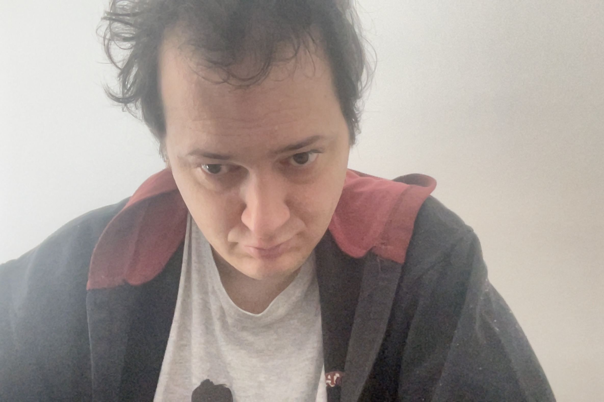

Costas Bratsos

Summary
Experienced in different work fields, making transition to the exciting web developing world
Education
- High School degree
- Cambridge English B2
Work Experience
Senior Editor – SPORT24
April 2021 – May 2024
- Head of International Football Department
- Head of special projects
- Participation in creating and executing native advertising campaigns
- Content creation, including writing in-depth analysis pieces, providing live game coverage, creating engaging features
Senior Editor – Contra.gr
September 2018 – March 2021
- Responsible for editing, proofreading, and publishing all website content
- Head of special projects
- Participation in creating and executing native advertising campaigns
- Content creation, including writing in-depth analysis pieces, providing live game coverage, creating engaging features
Journalist – SPORT24
September 2016 – August 2018
- Head of International Football Department
- Content creation, including writing in-depth analysis pieces, providing live game coverage, creating engaging features
Senior Editor – Sportnooz.gr
March 2010 – September 2012
- Responsible for editing, proofreading, and publishing all website content
- Content creation, including writing in-depth analysis pieces, providing live game coverage, creating engaging features
Journalist – Contra.gr
June 2004 – August 2016
- Content creation, including writing in-depth analysis pieces, providing live game coverage, creating engaging features
- Providing betting insights and recommendations
Journalist – SportDay
May 2004 – September 2004
- Content creation, including writing in-depth analysis pieces, providing live game coverage, creating engaging features
- Comprehensive Olympiacos coverage, including match reports, player profiles, and in-depth analysis
Journalist – Sport–fm.gr
February 2004 – September 2004
- Content creation, including writing in-depth analysis pieces, providing live game coverage, creating engaging features
Skills
- HTML⭐️⭐️⭐️
- CSS⭐️
- JavaScript⭐️⭐️
- Microsoft Office Suite⭐️⭐️
- Organization skills⭐️⭐️⭐️
Other